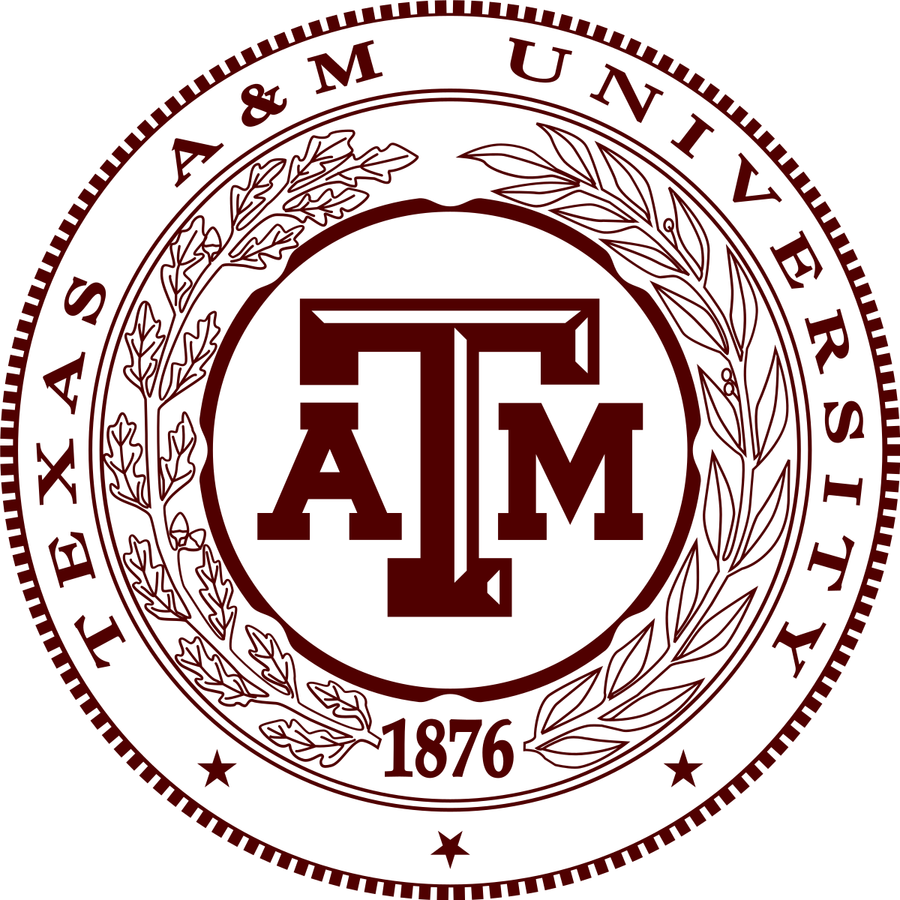

Service

Recently at my internship with the Applied Physics Laboratory in summer 2019 I worked with a couple of my coworkers to develop an inexpensive STEM Kit to showcase some fun optics expirements.
The goal of the project was to give these kits to students in underprivileged schools. While our project didn't make the final cut, it did make it past the initial proposal and into the demo stage!

During my first two years of college I was in the Texas A&M University Singing Cadets, where I had the opportunity to serve the group and university in a variety of settings.
My time in the group brought me to performing at official university functions and representing Texas A&M outside of Texas and the U.S.

Prior to coming to college I was active in various highschool honor societies as well as the Boy Scouts performing community service.
In Boy Scouts I constructed a shelter for a horse at a therapeutic riding center for my Eagle Scout project and subsequently earned the rank of Eagle Scout.